샘플 원고 · 디자인 시안 안내
샘플 원고와 디자인 시안에 관해 안내드립니다. 기존 샘플 원고를 책의 지면에 배치하기 좋은 형태로 정리했습니다. 집필하실 때 수정된 샘플 원고를 참고해 주시면 감사하겠습니다.
현재 시안은 디자인팀과 지면 구성 및 디자인 방향을 논의하기 위해 준비한 임시 시안으로, 최종 디자인은 아닙니다. 실제 출판을 고려해 글자 크기와 판형을 설정했으며, 현재 시안의 12쪽은 최종 편집 시 약 14쪽 분량이 될 것으로 예상합니다.
당초 전체 분량을 300쪽 미만으로 계획했으나, 집필된 원고의 분량과 내용을 검토하여 전체 쪽수를 늘리거나 수록 예제를 줄이는 방안을 검토할 예정입니다. 구체적인 조정 방향은 편집을 진행하면서 선생님들께 공유드리겠습니다.
현재 시안은 13장 원고를 기준으로 작성했습니다. 선생님들의 원고를 취합한 뒤, 여러 장에서 반복되는 공통 내용은 책의 앞부분으로 옮겨 정리할 수 있습니다. 분량이 긴 부분은 정해진 형식과 지면에 맞춰 기획 편집자 조아리 팀장이 문장을 다듬거나 내용을 재구성할 예정입니다. 예제의 난이도 조정이 필요한 경우에는 담당 선생님과 상의하겠습니다.
안내드린 형식을 지켜 주시되, 샘플 원고보다 길게 작성하셔도 괜찮습니다. 설명과 실습 과정이 충분히 담겨 있어야 편집할 때 필요한 내용을 살릴 수 있으므로, 분량에 대한 부담 없이 작성해 주시면 됩니다.
AI에게 입력하는 요청 문장 역시 가독성과 지면 분량을 고려해 수정할 수 있습니다. 다만, 수정한 문장은 충분히 테스트하여 원래 의도와 실습 결과가 유지되는지 확인하겠습니다.
선생님들께서 예상하신 독자 수준보다 한 단계 더 기초적인 수준을 기준으로 작성해 주시면 감사하겠습니다. 처음 바이브 코딩을 접하는 독자는 익숙한 용어나 간단한 조작에서도 어려움을 느낄 수 있습니다. 새로운 용어는 처음 나올 때 쉽게 풀어 주시고, 실습 과정은 어디를 클릭하고 무엇을 입력해야 하는지 순서대로 안내해 주세요. 실행 후 어떤 화면이나 결과가 나와야 하는지도 함께 설명해 주시면 좋습니다.
내용 자체를 쉽게 바꾸기보다는, 독자가 사전 지식 없이도 이해하고 따라 할 수 있도록 설명 사이의 빈틈을 채워 주신다고 생각해 주세요.
샘플 원고는 아래 [샘플 원고 다운로드] 버튼을 클릭하시면 내려받으실 수 있습니다. 궁금한 점은 언제든 편하게 문의해 주세요.
감사합니다.
기획 편집자 조아리 드림
다음 주 금요일은 국립중앙박물관 견학입니다. 박물관에서는 한 조에 6명 안팎으로 움직여 달라고 안내했고, 학년 부장님은 오늘까지 반별 조 편성표를 달라고 합니다. 명단을 펼쳐 인원을 맞추고 남녀 학생을 고르게 섞다 보니, 학생 몇 명만 옮겨도 인원수를 다시 세어야 합니다. 조마다 인솔 선생님도 배정해야 하고요.
이 장에서는 명단을 붙여 넣고 버튼을 누르면 조 편성과 인솔 교사 배정이 끝나는 도구를 챗GPT 코덱스로 만들어 봅니다. 이 과정에서 ‘조별 인원 차이 1명 이내’처럼 기준을 구체적으로 적는 법과, 기본 기능부터 만든 뒤 하나씩 추가하는 요령을 익힙니다.
작년에 4개 반 조 편성을 맡았는데, 전날 인솔 선생님 한 분이 출장을 가시는 바람에 표를 전부 다시 만들었어요. 그때 '버튼 하나로 다시 짜 주면 좋겠다'는 생각을 했습니다.
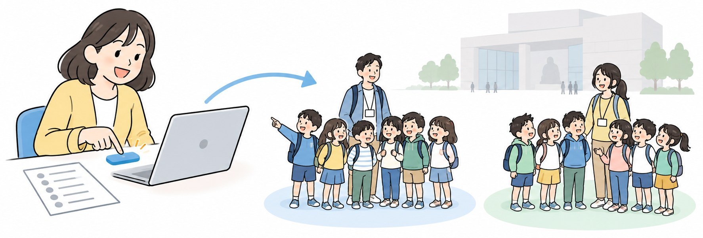
선생님이 만든 도구의 색이나 칸 위치는 이 그림과 다를 수 있습니다. 표에 적힌 여섯 가지가 화면에 있고 제대로 움직이면 같은 도구입니다.
| 번호 | 화면에 있는 것 | 하는 일 | 만드는 곳 |
|---|---|---|---|
| 1 | 학생 명단 칸 | 엑셀에서 복사한 번호·이름·성별을 붙여 넣음 | STEP 1 |
| 2 | 조 수 칸 | 몇 개 조로 나눌지 적음 | STEP 1 |
| 3 | 조 편성·다시 섞기 버튼 | 인원 차이 1명 이하로 무작위 편성 | STEP 1 |
| 4 | 조별 남·여 인원 | 조마다 남녀가 고르게 섞였는지 보여 줌 | STEP 2 |
| 5 | 인솔 교사 칸과 조별 교사 이름 | 조마다 인솔 교사 1명 배정 | STEP 3 |
| 6 | 인쇄 버튼 | 조별 표만 종이로 출력 | STEP 4 |
프로그램을 만들기 전에, AI에게 무엇을 요청하면 좋을지 미리 살펴봐요. 누가 사용할지, 어떤 정보를 입력할지, 어떤 규칙으로 작동하고 결과를 어떻게 보여 줄지 정리하면 원하는 도구를 만드는 데 도움이 됩니다.
| 요청할 항목 | 이번 도구의 요청 내용 | 요청하는 이유 |
|---|---|---|
| 사용자와 사용 환경 | 코딩을 모르는 담임교사, 학교 컴퓨터, 인터넷 없이 사용 | 별도 설치나 인터넷 연결 없이 쉽게 사용하기 위해 |
| 입력할 정보 | 학생 명단, 조 수 | 입력한 명단을 원하는 수의 조로 나누기 위해 |
| 작동 규칙 | 무작위로, 인원 차이 1명 이내 | 학생을 무작위로 섞으면서 조별 인원을 비슷하게 맞추기 위해 |
| 결과와 기능 | 조별 명단을 표로 표시, 다시 섞기 버튼 제공 | 조 편성 결과를 한눈에 확인하고, 필요하면 다시 편성하기 위해 |
STEP은 모두 같은 순서로 진행합니다. 왜 필요한지 읽고, 요청 프롬프트을 넣고, 체크리스트로 확인합니다. STEP 하나에 요청은 한 번입니다.
먼저 기본 뼈대만 요청합니다. 기본 기능부터 확인해야, 나중에 기능을 더했을 때 생긴 문제를 찾기 쉽습니다.
챗GPT 왼쪽 메뉴에서 코덱스를 엽니다.
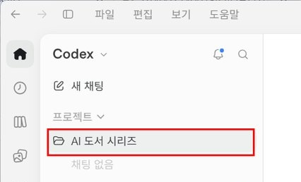
입력 칸에 아래 문장을 넣고 실행합니다.
코딩을 모르는 교사가 인터넷 없이 크롬으로 여는 조 편성 페이지를 HTML 파일 하나로 만들어 줘. 엑셀 명단(번호, 이름, 성별)과 조 수를 넣으면 조별 인원 차이 1명 이하로 무작위 편성하고, 조별 표와 '다시 섞기' 버튼을 보여 줘.
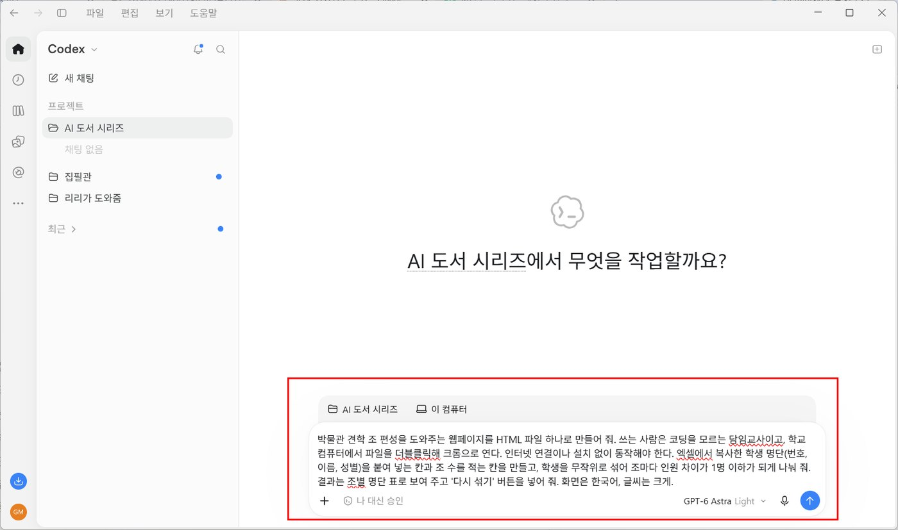
코덱스가 작업을 마치면 만든 파일 이름(예: index.html)과 작업 내용을 알려 줍니다. 설명에 '인터넷 연결 없이', '파일 하나'가 빠져 있다면 그 조건을 지켰는지 다시 물어봅니다.
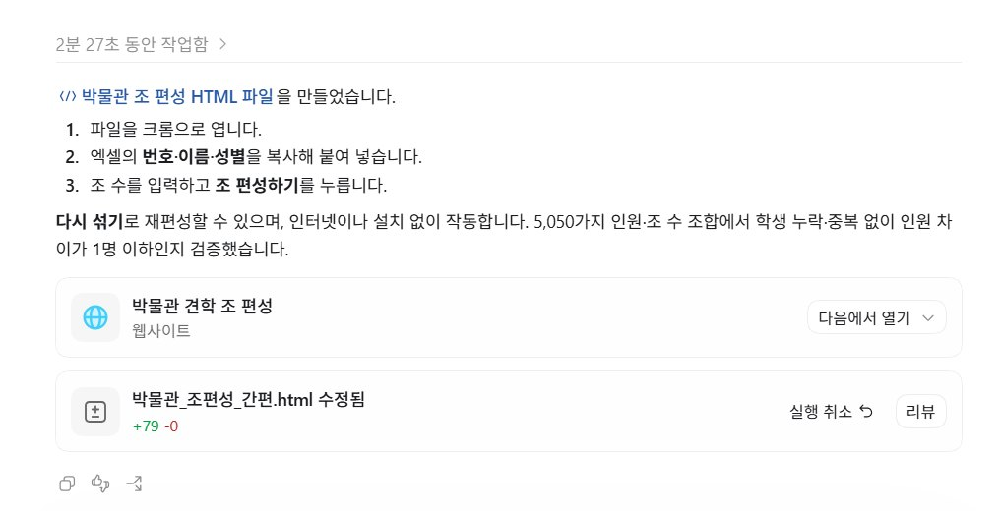
코덱스는 요청을 받으면 스스로 계획을 세우고 파일을 만듭니다. 몇 분이 걸릴 수 있으니 창을 닫지 말고 기다리세요. 작업 중에 무엇을 하고 있는지 화면에 표시됩니다.
파일은 코덱스에서 고른 프로젝트 폴더 안에 만들어집니다. 작업 결과 아래의 '다음에서 열기'를 눌러 크롬을 고르거나, 폴더에서 파일을 찾아 더블클릭하면 열립니다. 뒤의 STEP에서 고쳐 달라고 하면 같은 파일이 바뀌므로, 열어 둔 크롬 창에서 새로 고침(F5)만 하면 됩니다.
만든 파일을 크롬으로 엽니다.
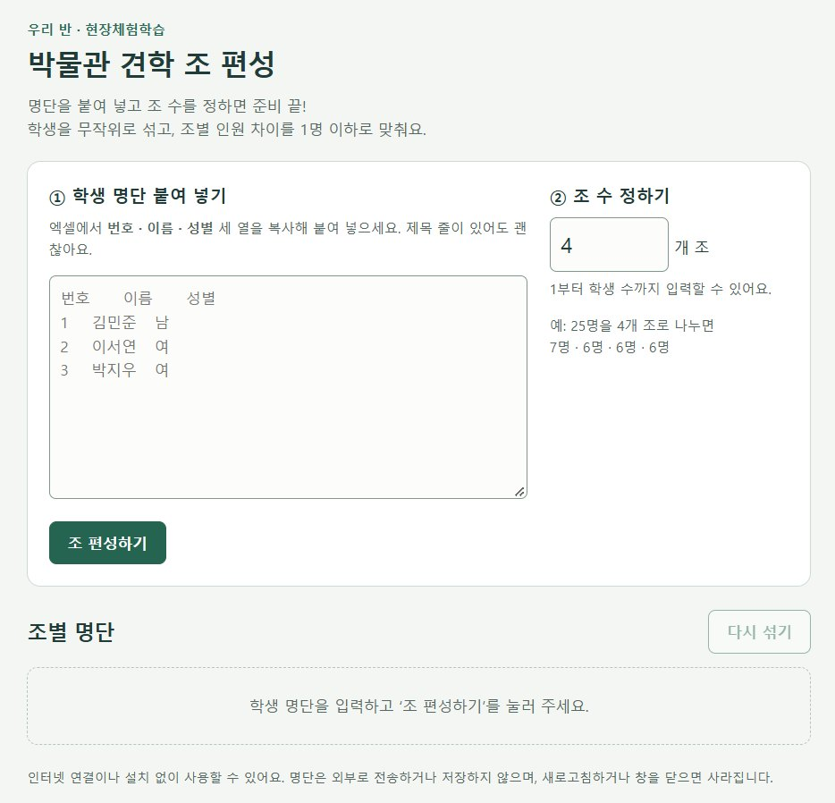
가명 명단 28명을 붙여 넣고 조 수에 5를 적은 뒤 버튼을 누릅니다. 28명을 5개 조로 나누면 6명 조 3개, 5명 조 2개가 나와야 합니다.
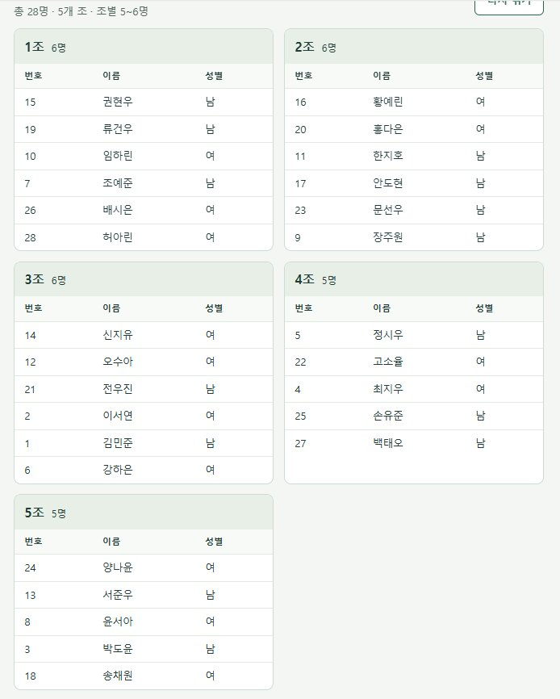
학생 수를 조 수로 나눈 값을 미리 계산해 두면, 결과가 맞는지 바로 알 수 있습니다. 28 ÷ 5 = 5 나머지 3이므로, 조마다 5명씩 넣고 남은 3명을 세 조에 1명씩 더하면 6명 조 3개, 5명 조 2개가 됩니다.
결과를 보면 어떤 조는 남학생이 5명, 어떤 조는 여학생이 5명일 수 있습니다. 이번에는 네 가지 가운데 '어떤 규칙으로'를 고칩니다.
같은 코덱스 작업 창에서 이어서 요청합니다. 새로 만들지 않고 지금 도구를 고치는 요청이라, 현재 문제를 먼저 말하고 바꿀 규칙을 숫자로 덧붙입니다.
지금은 조마다 남녀가 치우칠 때가 있어. 성별 칸을 읽어서, 조끼리 비교했을 때 남학생 수 차이도 1명 이하, 여학생 수 차이도 1명 이하가 되게 나눠 줘. 조마다 전체 인원 차이 1명 이하는 그대로 지켜 줘. 조별 표 아래에 조마다 남·여 인원도 적어 줘.
고친 파일을 다시 열어 같은 가명 명단(남 15명, 여 13명)으로 시험합니다. 15 ÷ 5 = 3이므로 남학생은 조마다 3명씩, 13 ÷ 5 = 2 나머지 3이므로 여학생은 3명 조가 3개, 2명 조가 2개여야 합니다.
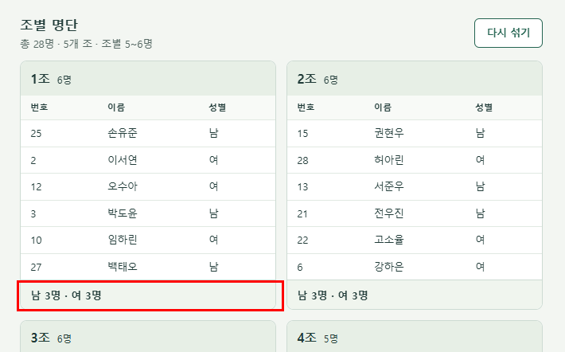
조마다 인솔 선생님을 붙여야 조 편성표가 완성됩니다. 이번에는 '무엇을 넣나'에 인솔 교사가 더해지고, 그에 따른 규칙이 하나 붙습니다.
새 입력 칸이 필요한 기능이라 '칸을 추가해 줘'로 시작하고, 교사가 조보다 적을 때 어떻게 할지도 적습니다.
인솔 교사 이름을 한 줄에 한 명씩 적는 칸을 추가해 줘. 조 편성 버튼을 누르면 조마다 인솔 교사를 1명씩 배정하고, 교사가 조보다 적으면 한 교사가 여러 조를 맡게 해 줘. 조별 표 맨 위에 인솔 교사 이름을 보여 줘.
인솔 교사를 3명 적고 5개 조로 편성합니다.
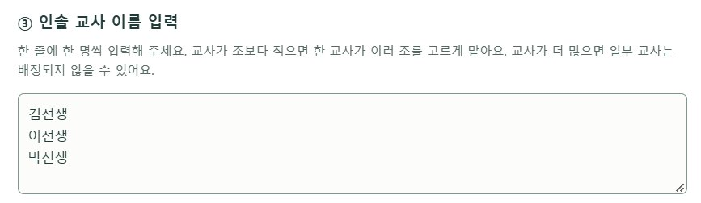
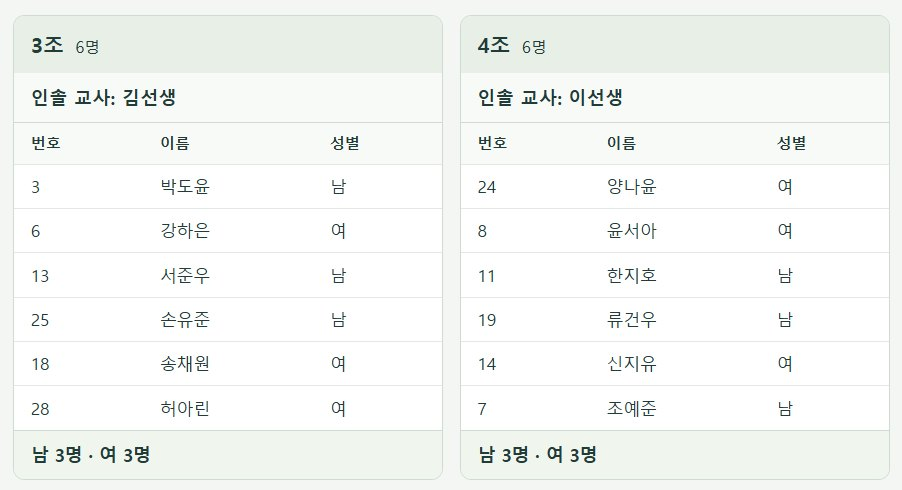
조 편성표는 종이로 뽑아 학년 부장님과 인솔 선생님께 드려야 합니다. 이번에는 '무엇이 나오나'에 인쇄를 더합니다.
인쇄물에는 입력 칸과 버튼이 필요 없으니, 인쇄할 때만 숨겨 달라고 요청합니다.
'인쇄' 버튼을 추가해 줘. 인쇄할 때는 입력 칸과 버튼은 숨기고 조별 명단 표만 나오게 해 줘.
고친 파일을 다시 열어 가명 명단으로 한 번 더 시험합니다.
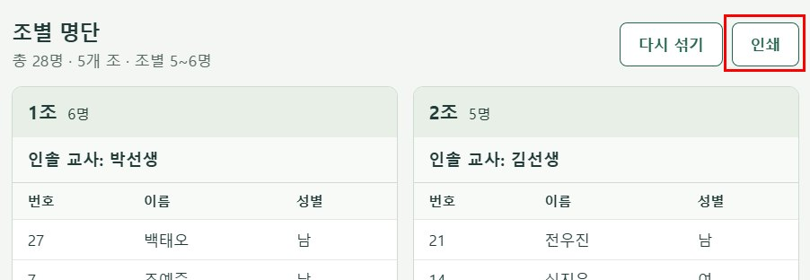
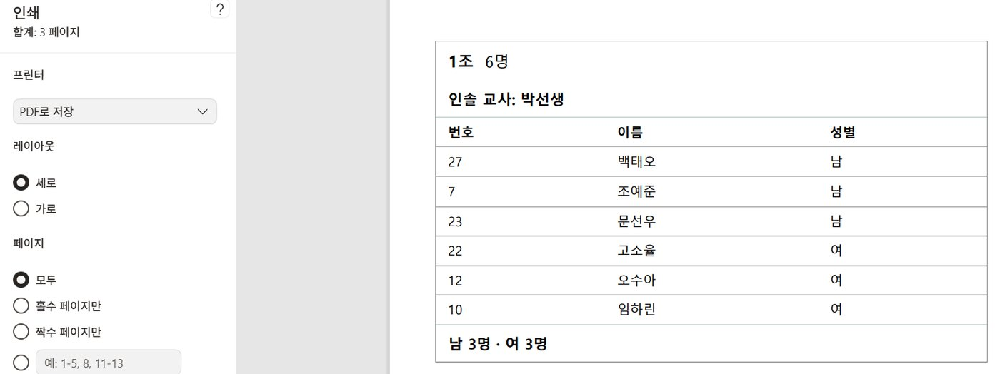
두 가지가 확인되면 파일을 바탕화면이나 학년 공유 폴더에 저장합니다. 이제 학교 컴퓨터에서 실제 학급 명단을 붙여 넣고, 조 편성 → 인쇄 순서로 사용합니다. 결석생이 생기면 명단에서 그 줄을 지우고 버튼을 다시 누르면 됩니다. 다음 견학 때는 파일을 열고 명단만 바꿔 넣으면 됩니다.
실제 학생 이름과 성별은 완성한 HTML 파일에만 넣습니다. 이 파일은 인터넷 없이 내 컴퓨터에서만 돌아가므로 명단이 밖으로 나가지 않습니다. 하지만 코덱스 입력 칸에 붙여 넣은 내용은 외부 서버로 전송됩니다. 오류를 보여 주려고 명단을 넣어야 할 때도 이름을 가명으로 바꿔서 넣으세요.
반 편성 도구는 완성됐지만, 이 장에서 정말 가져가야 할 것은 도구를 만든 방법입니다. "인원 차이 1명 이하"처럼 규칙을 숫자로 적었기 때문에 결과가 맞는지 바로 셀 수 있었습니다. 또 조건을 한꺼번에 넣지 않고 STEP마다 하나씩 더했기 때문에, 어디서 틀렸는지도 금방 찾을 수 있었습니다.
| 요령 | 조 편성 도구에서 | 다른 도구를 만들 때는 |
|---|---|---|
| 규칙은 숫자로 적기 | STEP 1 '인원 차이 1명 이하', STEP 2 '남학생 수 차이 1명 이하' | 요청하기 전에 "맞게 나왔는지 무엇을 세어 보면 알 수 있나?"를 먼저 정함 |
| 뼈대부터 만들고 하나씩 고치기 | STEP 1에서 기본 편성만, STEP 2~4에서 조건을 하나씩 | STEP 하나에 요청 한 번, 확인이 끝나야 다음으로 |
인솔 선생님이 바뀌었다는 연락을 받고도 이름만 고쳐 다시 누르니 1분 만에 새 표가 나왔어요.
이 도구는 '명단을 규칙대로 나누는' 모든 업무에 쓸 수 있습니다. 아래 세 가지는 요청 프롬프트의 입력과 규칙만 바꾼 것입니다.
수학여행 방 배정도 조 편성과 같은 일입니다. 명단을 정해진 인원으로 나누는 것이죠. 다른 점은 두 가지입니다. 방마다 정원이 다르고, 같은 성별끼리만 방을 써야 합니다.
이 도구를 수학여행 방 배정용으로 바꿔 줘. 방 번호와 방마다 정원을 적는 칸을 만들고, 같은 성별끼리만 방을 배정해 줘.
체육대회 반 대항전은 조 편성보다 단순합니다. 여러 조가 아니라 두 팀으로 나누되, 팀 사이에 전체 인원과 남녀 인원을 맞추면 됩니다.
조 대신 청팀·백팀 두 팀으로 나누고, 팀마다 남녀 인원을 맞춰 줘. 팀 이름은 내가 입력할 수 있게 해 줘.
학년 전체가 함께 가는 견학에서는 여러 반 학생을 섞어 조를 짜기도 합니다. 이때는 명단에 '반' 칸이 하나 더 필요하고, 한 조에 한 반 학생만 몰리지 않게 하는 규칙이 더해집니다.
명단에 반 칸을 추가해 줘. 여러 반 학생을 섞어서 조를 짜되, 조마다 각 반 학생이 고르게 들어가게 해 줘.
코덱스는 같은 요청 프롬프트을 받아도 색, 칸 위치, 버튼 이름을 매번 조금씩 다르게 만듭니다. 각 STEP의 확인 체크리스트가 모두 맞으면 그대로 쓰면 됩니다.
버튼 이름을 '조 편성'으로 바꾸고, 학생 명단 칸을 화면 맨 위에 놓아 줘.
엑셀에서 복사한 명단은 칸 사이가 눈에 보이지 않는 탭으로 구분됩니다. 도구가 쉼표만 구분자로 읽으면 번호·이름·성별이 한 덩어리가 됩니다.
엑셀에서 복사해 붙여 넣으면 번호, 이름, 성별이 한 칸으로 합쳐져. 탭, 쉼표, 공백을 모두 칸 구분으로 읽어 줘. 첫 줄이 '번호, 이름, 성별' 같은 제목이면 건너뛰어 줘.
조가 많으면 표가 한 장에 다 들어가지 않습니다. 쪽을 어디서 나눌지 정해 주지 않았기 때문에, 한 조의 표 중간에서 종이가 넘어갑니다.
인쇄할 때 한 조의 표가 두 장에 걸쳐 잘리지 않게 해 줘. 한 장에 조 두 개씩 들어가게 하고, 페이지 위에 행사 이름과 날짜를 적는 칸도 넣어 줘.